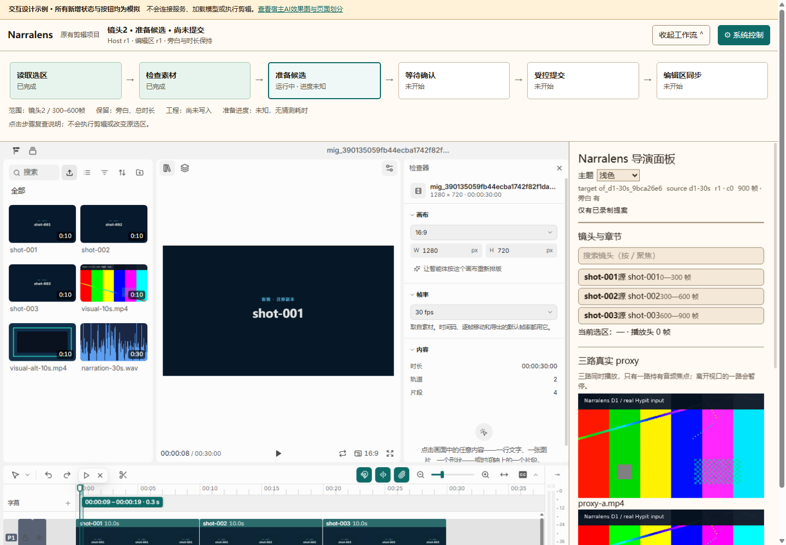
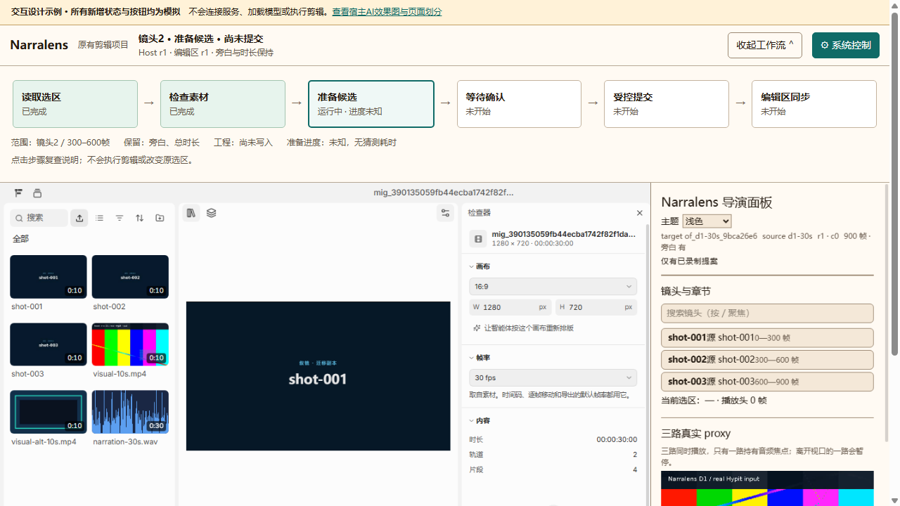
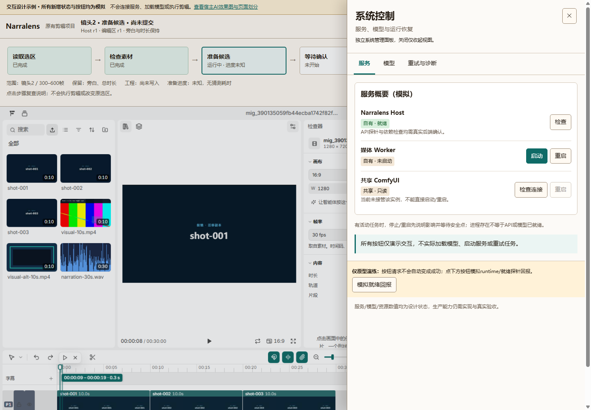
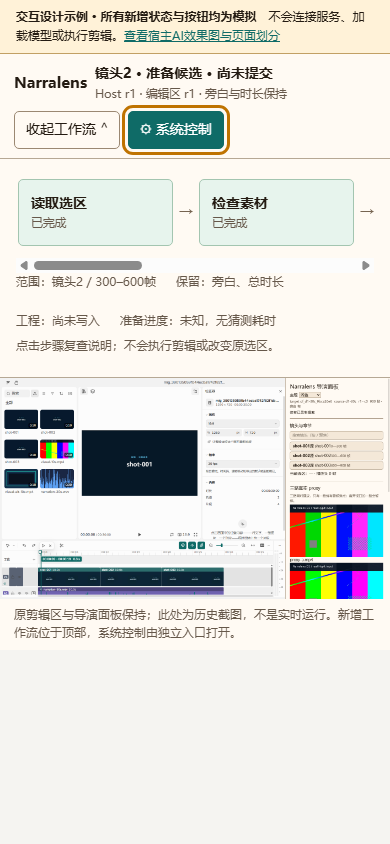

Narralens 创作者UX交互检视
Method: dual-agent (A: /root/ux_design_assessment · B: /root/ux_detector_assessment)
日期：2026-11-09。范围：S0 R3原型、独立Headless浏览器检查、现有M5源码静态检视。状态：REVIEW_COMPLETE / IMPROVEMENT_PROPOSAL_PENDING。生产实现未释放，S0人工认可未代签。
结论：保留现有编辑器的方向正确，但当前方案还不适合冻结为创作者交互基线。核心问题是创作决策不突出、后台执行细节过早暴露。
原型中的原编辑区是历史截图。本轮不把截图不能编辑判为生产缺陷，不把模拟回报按钮计为生产步骤，也不评价真实播放/精剪性能。现有M5源码可以证明控件结构，不能替代实时使用测试。
设计健康评分
0缺失、1较弱、2部分成立、3良好、4优秀。十项均适用。分数是专家启发式判断，不是真实用户测试成绩。
| 检视维度 | 得分/4 | 主要问题 |
|---|---|---|
| 状态可见 | 3 | 状态诚实，何时需要人介入不突出 |
| 创作者语言 | 2 | Host、素材化、受控提交等术语过多 |
| 控制与自由 | 2 | 回改要求、局部重做路径不足 |
| 一致性 | 2 | 系统、流程、导演栏争夺注意力 |
| 错误预防 | 3 | 共享资源和未知结果处理较稳妥 |
| 减少记忆 | 2 | 服务问题与具体镜头未关联 |
| 操作效率 | 1 | 用户需理解并推进技术步骤 |
| 视觉简约 | 1 | 工作流稀疏，编辑区拥挤 |
| 错误恢复 | 3 | 恢复语义清楚，任务关联不足 |
| 使用指引 | 2 | 系统边界解释多，创作判断指导少 |
| 合计 | 21/40 | 需显著改善 |
设计针对性与保留项
镜头范围、旁白保持、版本和同步语义体现了本项目特性；六张等权流程卡仍接近通用作业工具，没有充分表达创作者判断当前镜头的方式。最大的改进机会是将信息组织成目标、结果、待判断事项及当前可做的动作。
- 保留原生编辑器、导演面板及单一选区/时间轴/播放时钟。
- 保留默认可收起的顶部横向工作流和独立系统控制。
- 保留请求受理、模型就绪、工程提交、编辑区同步之间的真实边界，以及共享实例/活动任务保护。
五项优先问题
P1：创作者主线不突出
原型最强按钮是系统控制，点击工作流节点只得到通用复查说明。现有M5也要求输入已录制comparison ID，再手动素材化、计算影响、确认采用；判断入口排在三路预览之后。
证据：原型prototype.html第4、5、13–18行；src/app/m5/M5Panel.tsx第713–778行。原型缺少的是候选审阅与回改状态设计，不是要求准备中立即出现可批准结果。
改进：由流程串联前置准备，在原导演栏集中呈现当前目标、变化、保留项和一个当前主动作。原审批、impact/base/锁/许可检查继续保留，不以简化界面为由绕过。建议命令：$impeccable shape、$impeccable clarify。
P1：信息密度分配失衡
1440×1000实测，工作流展开使编辑器图像顶部从94.36px移到260.31px，下移165.95px；1280×720时仅余459.69px可见高度，时间轴落到首屏之外。六阶段近乎等权，原编辑区与导演栏则高度密集。
证据：b-browser/evidence.json与1440-expanded.png、1280-expanded.png；原型第2、5行；src/app/m5/m5.css及M5Panel.tsx的连续section。
改进：保留顶部横向结构，改紧凑阶段轨道，只展开当前阶段详情；将完成阶段、技术标识降级。比较能力保留，默认聚焦当前候选，其他路按需展开，避免三路同时占满决策区。建议命令：$impeccable layout、$impeccable distill。
P1：流程单向，创作迭代表达不足
固定六阶段解释后台执行，没有明确表达不满意时如何修改要求、只重做一个镜头、保留其他结果以及哪些候选因变更失效。
证据：原型第13–17行固定步骤与通用点击反馈。已有后台历史能力不能代替这部分交互设计。
改进：人类主线为目标→候选→比较→确认→回看，必要时局部回改；后台仍可并行，不强制创作者逐节点点击。支持的控制才可启用，不新增假暂停/假恢复。建议命令：$impeccable shape。
P2：系统控制缺少具体任务关联
服务/模型/重试按基础设施分类，未说明哪个镜头或任务因此受阻。桌面模态抽屉宽580px，覆盖原导演栏；恢复反馈位于全局消息而非对应事项。
证据：原型第7–11、18行；b-browser/1440-services.png和evidence.json。
改进：独立系统面板先显示受影响事项、原因和恢复动作，技术明细其次。正常创作时弱化入口，实际阻塞时显示影响；日常查看评估非模态布局，危险确认才短时阻塞。建议命令：$impeccable clarify、$impeccable layout。
P2：新增组件的键盘与当前状态语义不完整
实测系统标签不响应ArrowRight，三个role=tab均进入Tab顺序；工作流当前节点无aria-current=step，详情更新缺少关联播报。390px下轨道可视358px、内容1064px，第三个当前步骤从x=380开始，展开后几乎不可见。
证据：原型第7、13、17行；b-browser/evidence.json的tabArrow、390 expanded。
改进：补全标签方向键/Home/End、焦点与选中语义；展开时定位当前阶段，并提供合适播报。原型已有焦点环及关闭按钮返回焦点，不应误报为完全没有键盘支持。建议命令：$impeccable harden、$impeccable adapt。
认知负荷与情绪路径
独立走查在技能清单中记录5/8项额外负荷问题：单一焦点、分块、层级、选择组织、跨区域记忆。六阶段并不天然错误，问题在于六个同权可点卡片没有突出当前目标；素材库也不应机械地限为四项。
熟悉的编辑器与保留约束提供安心；展开流程后时间轴下沉、需要翻译术语，容易变成监工。等待期间缺少现在能做什么的说明，结束缺少明确的镜头结果回看。上述为专家假设，不是测得的用户情绪或流失率。
假设人物红旗
- 首次创作者：最显眼入口是系统控制，可能误以为必须先懂模型管理；需要目标与当前决策指引。
- 熟练剪辑者：仅改单镜时，流程条和连续预览占用时间轴与决策空间；需要快速比较、局部回改。
- 键盘/辅助技术用户：标签惯例、当前阶段及更新播报未完整；不评价截图内原生编辑器的快捷键支持。
自动检测与人工判断的差异
源静态detector运行一次，exit=0，结果[]，零规则/位置/误报。浏览器可变脚本预检成功，运行时overlay加载并报告tiny-text一项：顶部.summary small实测11.6667px（原型第4行）。这是辅助版本文本，按次要可读性问题处理，不冒充主正文均为小字。
截图b-browser/1440-overlay-attempt.png保存了检测标注。仅Headless运行，没有向用户展示可见的Human浏览器页。静态零发现与实际UX问题并不矛盾；扫描不能评价完整创作路径。
Escape关闭后程序化点击场景的activeElement为空，证据不足以证明真实键盘焦点返回缺陷，不列为问题。原型模拟声明重复属于审查材料特性，不当作生产文案缺陷。
下一版建议与尚未完成的验收
建议先完整演示：选镜头/表达目标→看候选差异→确认采用→确认编辑区更新→继续精修。顶部负责说明与定位，原导演栏负责决策，系统控制负责运行维护。整体从想法到交付的PRD主线继续保留，不因本轮改单镜原型缩减。
详细组件职责、状态/动作表和6项验收任务见IMPROVEMENT_PROPOSAL.md。新增内容均待核对，不替代冻结合同。真实用户走查、生产事件接线、完整端到端业务验收均NOT_RUN。
待核对方向
- 主线先落在当前镜头的结果与判断，还是先做全片从简报到交付的阶段导航？两者最终均需覆盖。
- 工作流展开默认采用紧凑阶段轨道加当前详情，还是所有阶段同时展示完整说明？
本轮独立材料：assessment-a.md、assessment-a-browser-receipt.json、detector.json、b-browser/evidence.json。生产与原S0候选文件未修改。
本轮Headless截图证据
下列为原R3原型的实际浏览器截图，含历史编辑器图片；不是新目标图，不是生产业务验收。

查看1280×720布局

查看系统控制与窄屏当前阶段

